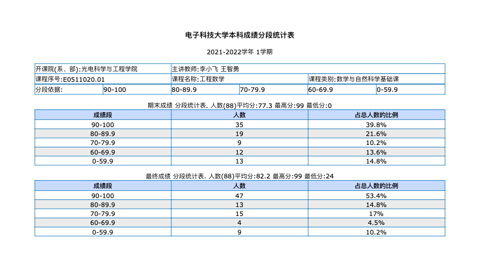
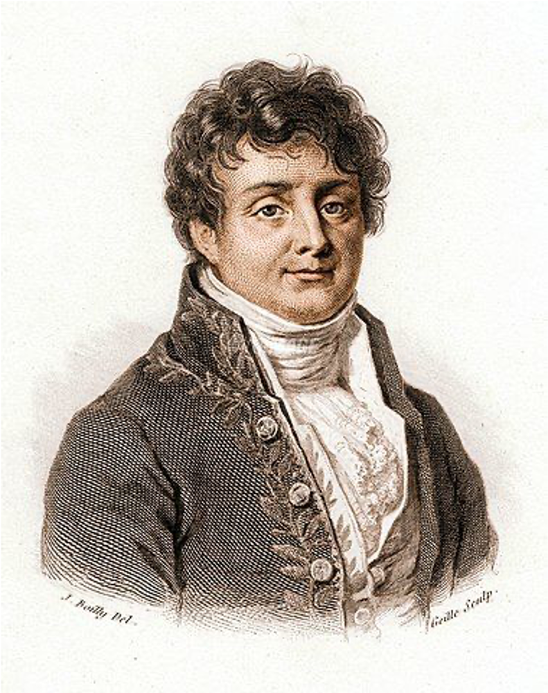
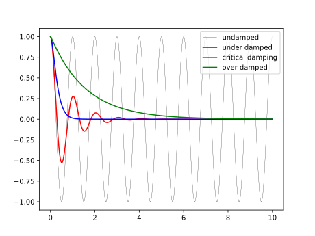
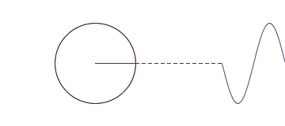
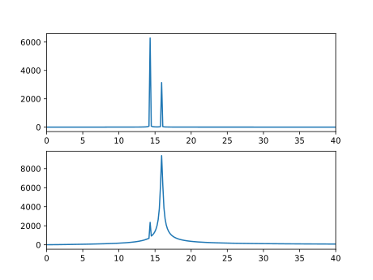

工程数学
Engineering Mathematics
李小飞 光电科学与技术学院
2023-03-01
第一章 绪论
课程简介
常微分方程
傅里叶变换
Table of Contents, with links to other slides of this same presentation.
Note that instead of absolute positioning we use relative positioning,
with the data-rel-x and data-rel-y attributes. This means the step is
positioned relative to the foregoing step. In other words, this is
equivalent to data-x="0" data-y="-3000".
1. 课程简介：

17世纪微积分出现，物理学家写方程，数学物理学家解方程，试图通过方程的解来理解大千世界
数学分支：

数学：逻辑，算术，分析，统计，结构
分数构成:
平时成绩： 15%
课堂测试： 15%
期末考试： 70%
教学效果：

课时分配:
- 第一章 绪论 (4)
- 第二章 偏微分方程（6）
- 第三章 薛定谔方程（8）
- 第四章 氢原子薛定谔方程（8）
- 第五章 特殊函数及其应用（6）
参考书目：
- 教材：《工程数学讲义》 李明奇，钟尔杰，国防工业出版社， 待出版
- 《Mathematics for Physicists》 Shaw, G.
- 《数学物理方法》 姚瑞正，梁家宝 ，武汉大学出版社，1992
- 《数学物理方程与特殊函数》南京工学院教研组，人民教育出版社，1983
- 《数学物理方程》孙振绮，机械工业出版社，2004
2. 数理名家
拉普拉斯（法）
泊松（法）
勒让德（法）
傅里叶（法）
格林（英）
贝塞尔（德）
拉普拉斯

乾隆年间生成，解拉普拉斯方程，开数理方程先河
泊松

泊松方程: 发现Laplace方程只是Poisson方程的特例
勒让德

勒让德方程: 发现球坐标系Laplace方程与勒让德方程等效
傅里叶

分离变量法，积分变换法，傅里叶级数，傅里叶变换，叠加原理
格林

格林函数: Laplace方程和泊松方程的解都是格林函数的叠加
贝塞尔
柱坐标系下Laplace方程是贝塞尔方程，解是一系列贝塞尔函数的叠加
新方程:
薛定谔方程
爱因斯坦场方程
...
第一讲 常微分方程
衰减与增长模型
振动模型
通用解法
1. 一阶微分方程的数学模型
例-1：求解放射性衰减方程
$$\frac{du}{dt} = - r u, \qquad u(t_0) = u_0$$
解：方程可分离变量
\begin{aligned}
\frac{du}{u} &= - rdt\\
\ln u &=-rt+C\\
u(t)&=C'exp(-rt) \\
\end{aligned}
代入定解条件（t=0), 有
\begin{aligned}
u(t_0) & = C'exp(-rt_0) \\
& = u_0 \\
\implies C' & =u_0
\end{aligned}
方程的解为：
$$ u(t)=u_0 exp(-rt) $$
显然，这是一个指数哀减。当$r>0$时, 当$t \to \infty$， $u(t) \to 0$
衰减过程的一个重要参数是半衰期（T）
解：在T时刻，体系的质量只有原来的一半
\begin{aligned}
\frac{1}{2}u_0 &=u(T) \\
& =u_0 exp(-rT) \\
T &=\frac{1}{r} \ln 2 \\
& \approx \frac{1}{r} \times 0.6931
\end{aligned}
结束！
例-2： 求人口增长的模型(逻辑斯蒂)
解：方程可分离变量
\begin{aligned}
\frac{1}{u(1-u / K)}du &=r d t \\
\frac{u / K+(1-u / K)}{u(1-u / K)} d u &=r d t \\
(\frac{1}{K-u}+\frac{1}{u} ) d u &=r d t \\
-\ln (K-u)+\ln u &=r t+C \\
\end{aligned}
\begin{aligned}
&\ln \frac{u}{K-u} = r t+C\\
&\frac{u}{K-u} = \exp (r t+C)\\
&u(t) = \frac{K}{1+ \exp (-r t-C)}
\end{aligned}
参数C由初始条件确定
TIPS: 一生二, 二生三, 三生万物?
2. 二阶常微分方程的数学模型
例-3: 建立简谐振动微分方程
 解:
解: 根据牛顿第二定律和胡克力定律，有
\begin{equation*}
F= -k x, ~~ F=Ma= M\frac{d ^2 x}{d t^2}
\end{equation*}
整理
$$\frac{d ^2 x}{d t^2} +\frac{k}{M} x =0$$
写成标准数理方程
\begin{cases}
x^{\prime \prime} +\omega ^2 x = 0 \qquad (1) \\
\\
x(t)\left |_{t=0} =x_0 \right. \qquad (2) \\
x^{\prime}(t) \left |_{t=0} =0 \right. \qquad (3)
\end{cases}
（2）和（3）分别是初始位置和速度，统称 初始条件
解方程:
这是二阶常系数齐次微分方程, 可通过辅助方程求解
\begin{aligned}
\lambda^2+\omega ^2&=0 \\
\lambda_{1, 2} &=\pm i\omega
\end{aligned}
原方程的基本解
$$ \begin{cases}
x_{1} =\cos \omega t \\
x_{2} =\sin \omega t
\end{cases} $$
通解： $x(t)=C_1 \cos \omega t +C_2 \sin \omega t $
代入定解条件, 得特解：
$$x(t)=x_0 \cos \omega t $$
例-4: 考虑空气阻力， 有如下小阻尼振动微分方程， 试求解
\begin{equation*}
\frac{d^2 x}{d t^2} +2\varepsilon \frac{d x}{dt} +\omega ^2 x = 0 , ~~~ (\varepsilon \ll \omega)
\end{equation*}
数学上，也有写成：
$$ \frac{\mathrm{d}^2x}{\mathrm{d}t^2} + 2\zeta\omega_0\frac{\mathrm{d}x}{\mathrm{d}t} + \omega^2_0 x = 0$$
解: 令 $ x(t)= exp(-\varepsilon t) u(t) $, 微分
$$
\begin{aligned}
\frac{d x}{d t } & =exp(-\varepsilon t) [-\varepsilon u +\frac{d u}{dt}]\\
\frac{d^2 x}{d t^2 } & =exp(-\varepsilon t) [\varepsilon ^2 u -2\varepsilon \frac{d u}{dt}+ \frac{d^2
u}{dt^2} ]
\end{aligned}
$$
代回方程并整理
$$ \frac{d^2 u}{d t^2} +(\omega ^2 - \varepsilon ^2) u = 0, \quad (\varepsilon \ll \omega) $$
令 $k^2 =\omega ^2 - \varepsilon ^2 >0 $, 得简谐振动方程标准型
$$\frac{d^2 u}{d t^2} +k ^2 u = 0$$
由公式得
\begin{equation*}
u(t)=C_1 \cos k t +C_2 \sin k t
\end{equation*}
方程的通解
\begin{equation*}
x(t)= exp(-\varepsilon t) \left[ C_1 \cos \sqrt{k} t +C_2 \sin \sqrt{k} t \right]
\end{equation*}
如存在定解条件，则可以定常，比如为：
\begin{equation*}
x(t)= x_0 exp(-\varepsilon t) \cos \sqrt{\omega ^2 - \varepsilon ^2} t
\end{equation*}
很明显，振幅呈指数衰减！

例-5: 考虑加上周期性的策动力 $p \sin \omega_0 t$， 则有如下非齐次振动方程， 试求解
\begin{equation*}
\frac{d^2 x}{d t^2} +\omega ^2 x = p \sin \omega_0 t , ~~~ (\varepsilon \ll \omega)
\end{equation*}
解: 对应齐次方程的通解：
\begin{equation*}
x_1(t)=C_1 \cos \omega t +C_2 \sin \omega t
\end{equation*}
因此，可以设非齐次方程的特解为：
$$ x_2(t) =C \sin \omega_0 t
问题转化为求 $C$ （待定系数法）
把特解代回原方程
$$ \begin{aligned}
C(\omega^2-\omega_{0} ^2 ) \sin(\omega_0 t)& =p\sin(\omega_0 t)\\
C & = \frac{p}{\omega^2-\omega_{0} ^2 }
\end{aligned} $$
原方程的解为：对应齐次方程的通解+特解
$$ x(t)= C_1 \cos \omega t +C_2 \sin \omega t+ \frac{p}{\omega^2-\omega_{0} ^2 } \sin (\omega_0 t) $$
TIPS: 当策动函数为多项式函数，三角函数等与通解形式相类似型时， 待定系数法通常可确定特解。对于一般性的情况，可采用常数变易法求解。
分析： 这是固有频率和策动频率两种波的线性叠加
 如果两频率相近，发生共振 。
器件的工作频率要远离固有频率。
如果是衰减波，最后只留下策动频率波。
如果两频率相近，发生共振 。
器件的工作频率要远离固有频率。
如果是衰减波，最后只留下策动频率波。
如果既有策动又有空气阻尼，方程为：
\begin{equation*}
\frac{d^2 x}{d t^2} +2\varepsilon \frac{d x}{dt} +\omega ^2 x = f(t) , ~~~ (\varepsilon \ll \omega)
\end{equation*}
如果策动还与位置相关，则方程为：
\begin{equation*}
\frac{d^2 x}{d t^2} +2\varepsilon \frac{d x}{dt} +\omega ^2 x = f(x, t) , \qquad(\varepsilon \ll \omega)
\end{equation*}
如果阻尼系数是位置的函数（比如空间密度不是常数），则方程为：
\begin{equation*}
\frac{d^2 x}{d t^2} +2\varepsilon(x) \frac{d x}{dt} +\omega ^2 x = f(x, t) , \quad(\varepsilon \ll \omega)
\end{equation*}
如果再考虑到阻尼导致弹簧温度变化，进而影响弹性系数，则方程为：
\begin{equation*}
\frac{d^2 x}{d t^2} +2\varepsilon(x) \frac{d x}{dt} +\omega^2 (t) x = f(x, t) , ~~~ (\varepsilon \ll \omega)
\end{equation*}
如果弹簧不同的位置温度变化不一样，则方程为：
\begin{equation*}
\frac{d^2 x}{d t^2} +2\varepsilon(x) \frac{d x}{dt} +\omega^2 (x,t) x = f(x, t) , ~~~ (\varepsilon \ll
\omega)
\end{equation*}
TIPS: 现实工程里的数理方程远比《工程数学》教材上的方程复杂！建立方程并求解是工科学校学生的一项基本功。
阻尼系数与振荡

3. 常微分方程的通用解法
常数变易法
特征方程
变量代换法>
级数展开法
例-6: 求解一阶常系数线性非齐次常微分方程
$$ y'+py=f(x)$$
解: 对应的齐次方程是衰减数学模型，有解：
$$y=C exp(-px)$$
采用常数变易法，设非齐次方程的解为
$$y(x) =C(x) exp(-px)$$
求导
$$ \begin{aligned}
y'&= -p C(x) exp(-px) + C'(x) exp(-px) \\
py &= p C(x) exp(-px)
\end{aligned} $$
代入原方程, 得
$$ exp(-px)C'(x) = f(x)$$
解得
$$ C(x) = \int exp(px) f (x)dx + c $$
原方程的（通）解为
$$ \begin{aligned}
y(x) &=C(x) exp(-px) \\
&= \left(\int exp(px) f (x)dx + c\right) exp(-px)
\end{aligned}$$
分析： 做指数哀减，哀减幅度由初始条件和自由项共同决定
例-7: 求一阶非齐次变系数微分方程:
\begin{equation*}
y^{\prime}+P(x) y=Q(x)
\end{equation*}
解: 对应的齐次方程为：
\begin{equation*}
y^{\prime}+P(x) y=0
\end{equation*}
分离变量法得通解
$$y=Ce^{-\int P(x)dx}$$
常数变易，令： $C=C(x)$，得
$$
y=C(x)e^{-\int P(x)dx}
$$
求导并代回原方程
$$
C^{\prime}(x)=\frac {Q(x)} {e^{-\int P(x)dx}}
$$
积分得
$$
C(x)=\int Q(x)e^{\int P(x)dx} dx+c
$$
原方程得解
$$
y=\left(\int Q(x)e^{\int P(x)dx} dx+c\right)e^{-\int P(x)dx}
$$
例-8: 求解二阶常系数非齐次常微分方程
$$ y^{\prime \prime}+py'+qy=f(x) $$
解: 对应的齐次方程为：
$$ y^{\prime \prime}+py'+qy=0 $$
特征方程
$$ \lambda^2 +p\lambda +q=0 $$
解有三种情况：
$$ \begin{aligned}
两相异实根：& \lambda_1 \ne \lambda_2 \\
两相同实根：& \lambda_1 = \lambda_2 \\
两共轭复根：& \lambda_1=\alpha+i\beta , \lambda_2=\alpha-i\beta
\end{aligned}$$
对应的齐次方程的通解：
$$ \begin{aligned}
两相异实根：y=& C_1 exp(\lambda_1 x)+ C_2 exp (\lambda_2 x) \\
两相同实根：y=& (C_1+C_2x) exp (\lambda_1 x) \\
两共轭复根：y=& exp(\alpha x) [C_1 \cos (\beta x)+ C_2 sin (\beta x)]
\end{aligned}$$
根据自由项的特点，再通过待定系数法或常数变易法求解非齐次常微分方程。
例-9: 求解二阶常系数非齐次常微分方程的初值问题
\begin{cases}
u^{\prime \prime} +\omega ^2 u =f, (t>0)\\
\\
u(0)=0, u'(0)=0
\end{cases}
解: 这是振动数学模型，齐次方程有通解：
$$ u=C_1 \cos(\omega t)+C_2 \sin(\omega t) $$
由于$f$的函数形式不明，不能写出特解。采用常数变易，设非齐次方程的解为
$$ u=C_1 (t) \cos(\omega t)+C_2 (t) \sin(\omega t) $$
求导
$$ \begin{aligned}
u'& =[C'_1(t) \cos(\omega t)+C'_2(t) \sin(\omega t)] \\
&+ [ - \omega C_1(t) \sin(\omega t)+ \omega C_2(t) \cos(\omega t) ]
\end{aligned} $$
令 $$[C'_1(t) \cos(\omega t)+C'_2(t) \sin(\omega t)]=0 \qquad (1) $$
再求导
$$ u^{\prime \prime}= [ - \omega C'_1(t) \sin(\omega t)+ \omega C'_2(t) \cos(\omega t) ] -\omega^2 u $$
代回原方程
$$ [ - \omega C'_1(t) \sin(\omega t)+ \omega C'_2(t) \cos(\omega t) ] =f \qquad( 2) $$
联立（1）（2）， 得方程组
$$\qquad \begin{bmatrix}
\cos(\omega t) & \sin(\omega t) \\
-\omega \sin(\omega t) & \omega\cos(\omega t)
\end{bmatrix}
\begin{bmatrix}
C'_1(t)\\
C'_2(t)
\end{bmatrix} =
\begin{bmatrix}
0\\
f
\end{bmatrix} $$
求解：
\begin{cases}
C'_1(t)=\dfrac{f}{\omega} \sin(\omega t) \\
C'_2(t)=\dfrac{f}{\omega} \cos(\omega t)
\end{cases}
积分得
\begin{cases}
C_1(t)=\dfrac{1}{\omega} [\int_{0}^{\tau} \sin(\omega \tau) f(\tau) d\tau +c_1 ]\\
C_2(t)=\dfrac{1}{\omega} [\int_{0}^{\tau} \cos(\omega \tau) f(\tau) d\tau +c_2 ]\
\end{cases}
原方程的通解：
\begin{aligned}
u=&\dfrac{1}{\omega}\cos(\omega t)[\int_{0}^{\tau} \sin(\omega \tau) f(\tau) d\tau +c_1 ] \\
&+\dfrac{1}{\omega} \sin(\omega t) [\int_{0}^{\tau} \cos(\omega \tau) f(\tau) d\tau +c_2 ]
\end{aligned}
代入定解条件，得 $c_1=c_2=0$
原方程的解为：
\begin{aligned}
u=&\dfrac{1}{\omega}\cos(\omega t)\left[\int_{0}^{\tau} \sin(\omega \tau) f(\tau) d\tau \right] \\
&+\dfrac{1}{\omega} \sin(\omega t) \left[\int_{0}^{\tau} \cos(\omega \tau) f(\tau) d\tau \right]
\end{aligned}
结束！
例-10: 求二阶变系数齐次常微分方程（欧拉方程-1）
$$ x^2 \frac{d^2 y}{d x^2} +x \frac{d y}{d x} +n^2 y =0 $$
解: 作变量代换,令 $x=exp(t) , (t=ln x)$，求微分：
$$
\frac{d y}{d x} = \frac{d y}{d t}\frac{d t}{d x}= \frac{1}{ x}\frac{d y}{d t} \implies x \frac{d y}{d x}=
\frac{d y}{d t}
$$
$$ \frac{d ^2y}{d x^2} = \frac{d }{d t} ( \frac{1}{ x}\frac{d y}{d t} )\frac{d t}{d x}=
\frac{1}{ x^2}(\frac{d ^2y}{d t^2} - \frac{d y}{d t}) $$
$$ x^2 \frac{d^2 y}{d x^2} = \frac{d ^2y}{d t^2} - \frac{d y}{d t} $$
代回原方程并整理，得
$$ \frac{d^2 y}{d t^2} +n^2 y =0 $$
这是振动数学模型，有通解：
$$ u=C_1 \cos(n t)+C_2 \sin(n t) $$
把 $t=ln x$ 代入，得原方程的通解
$$ y(x)=C_1 \cos (n \ln x) +C_2 \sin (n \ln x) $$
结束！
例-11: 求二阶变系数齐次常微分方程（欧拉方程-2）
$$ x^2 \frac{d^2 y}{d x^2} +2x \frac{d y}{d x} -n(n+1) y =0 $$
解: 令 $x=exp(t) , (t=ln x)$，求微分：
$$
\frac{d y}{d x} = \frac{d y}{d t}\frac{d t}{d x}= \frac{1}{ x}\frac{d y}{d t} \implies x \frac{d y}{d x}=
\frac{d y}{d t}
$$
$$ \frac{d ^2 y}{d x^2} = \frac{d }{d t} ( \frac{1}{ x}\frac{d y}{d t} )\frac{d t}{d x}=
\frac{1}{ x^2}(\frac{d ^2y}{d t^2} - \frac{d y}{d t}) $$
$$ x^2 \frac{d^2 y}{d x^2} = \frac{d^2 y}{d t^2} - \frac{d y}{d t} $$
代回原方程并整理，得
$$ \frac{d^2 y}{d t^2 } +\frac{dy}{dt}-n(n+1) y =0 $$
这是含哀减项的非标准振动数学模型，写特征方程
$$ \lambda^2 +\lambda -n(n+1) =0 $$
两相异实根：$ \lambda_1 =n, \quad \lambda_2 = -(n+1) $
方程的解为：
$$ y(t)=C_1 \exp (nt) +C_2 \exp (-(n+1) t) $$
代入 $t=ln x$, 原方程得解：
$$ y(x)=C_1 x^n +C_2 x^{-(n+1) } $$
TIPS: 考虑其他更复杂的方程形式
系数是其他形式的二阶欧拉方程
非齐式二阶欧拉方程
高阶欧拉方程
例-12: 求二阶变系数非齐次常微分方程（欧拉方程-3）
$$ x^2 \frac{d^2 y}{d x^2} -2x \frac{d y}{d x} +2y = \ln^2( x) -2 \ln(x) $$
解: 令 $x=exp(t) , (t=ln x)$，求微分并代回原方程
$$
\frac{d^2 y}{d t^2} -3\frac{dy}{dt} +2 y =t^2 -2t $$
这是含哀减项和策动项（自由项）的非标准振动数学模型，
先写齐次方程的特征方程
$$ \lambda^2 -3\lambda + 2 =0 $$
有两相异实根
$$ \lambda_1 =1, \lambda_2 =2 $$
通解：
$$y_1 =C_1 e^t +C_2 e^{2t} $$
现在有二条路可走
特解+通解
常数变易法
考虑自由项（$ \ln^2( x) -2 \ln(x) = t^{2} -2 t $ ），令特解为：
$$ y_2 = a t^2 +bt+c $$
把特解代回原方程, 并求解得
$$ y_2=\frac{1}{2} t^2+\frac{1}{2}t+\frac{1}{4} $$
原方程得解
$$ y= y_1 + y_2 =C_1 e^t +C_2 e^{2t}+\frac{1}{2} t^2+\frac{1}{2}t+\frac{1}{4} $$
代入 $t=ln x $, 得
$$ y(x)=C_1 x +C_2 x^2+\frac{1}{2} \ln ^2 x+\frac{1}{2}\ln x+\frac{1}{4} $$
结束！
例-13: 求二阶变系数齐次常微分方程（n 阶厄米方程）
$$ \frac{d^2 y}{d x^2} -2x \frac{d y}{d x} +2n y =0 $$
解: 设方程有级数解
$$ y=\sum_{k=0}^{\infty} c_k x^k $$
问题转化为求 { $c_k$ }
求导：
\begin{aligned}
y' &= \sum\limits_{k=1}^{\infty} k c_k x^{k-1} \\
&= \sum\limits_{k=0}^{\infty} (k+1) c_{k+1} x^{k}\\
\end{aligned}
\begin{aligned}
y'' &= \sum\limits_{k=2}^{\infty} k (k-1) c_k x^{k-2} \\
&= \sum\limits_{k=0}^{\infty} (k+2) (k+1) c_{k+2} x^k
\end{aligned}
(注意：脚标变换 大法！)
代回原方程：
$$ \sum_{k=0}^{\infty} [ (2n -2k)c_k +(k+2)(k+1) c_{k+2} ] x^k =0 $$
一个多项式为零，要求所有项的系数为零
$$ (2n -2k)c_k +(k+2)(k+1) c_{k+2} =0 $$
得系数递推式：
$$ c_{k+2} = \frac{ 2(k-n)}{(k+2)(k+1) } c_k, ( k=0,1,2,3, \cdots )$$
这是隔项递推，如果知道 $c_0, c_1$ ， 则所有的 $c_k$ 都可得。
试推一下：
$$\begin{cases}
c_2 =- \frac{2n}{2!} c_0\\
c_4 = \frac{2^2n(n-2)}{4!} c_0 \\
c_6 = -\frac{2^3n(n-2)(n-4)}{6!} c_0 \\
\cdots
\end{cases} $$
偶数阶：
$$c_{2m} = (-1) ^m \frac{2^m n(n-2)(n-4) \cdots (n-2m+2) } {(2m)!} c_0 $$
同理，奇数阶:
$$ c_{2m+1} = (-1) ^m \frac{2^m (n-1) (n-3)(n-5)...(n-2m+1) } {(2m+1)!} c_1 $$
令：
\begin{cases}
y_1(x) = [1- \dfrac{2n}{2!} x^2+ \dfrac{2^2n(n-2)}{4!} x^4 -\cdots ] \\
y_2(x) = [x- \dfrac{2(n-1)}{3!} x^3+ \dfrac{2^2(n-1)(n-3) }{5!}x^5 -\cdots ]
\end{cases}
原方程得解：
$$y(x) =c_0y_1(x)+c_1 y_2(x)$$
第二讲 傳里叶级数与傅里叶变换
数学公式
物理意义
正交完全集
1. 数学公式
如果$f(x)$是定义于$(-\infty,+\infty)$的周期函数（$T=2l$）, 则可表示成如下级数形式：
$$ \begin{cases}
f(x) =\dfrac{a_0}{2} +\sum\limits_{n=1}^{\infty} \left( a_n \cos~ \dfrac{n\pi}{l} x + b_n \sin~
\dfrac{n\pi}{l} x \right) \\
a_n =\dfrac{1}{l} \int\limits_{-l}^{l} f(\xi ) \cos~ \dfrac{n\pi}{l} \xi d\xi \\
b_n =\dfrac{1}{l} \int\limits_{-l}^{l} f(\xi ) \sin~ \dfrac{n\pi}{l} \xi d\xi
\end{cases} $$
如果$f(x)$不是周期函数，则有如下变换形式
$$ \begin{cases}
f(x) =\int\limits_{-\infty}^{+\infty} G(\omega) e^{i\omega x} d\omega\\
G(\omega) = \dfrac{1}{2\pi} \int\limits_{-\infty}^{+\infty} f(x) e^{-i\omega x} dx
\end{cases} $$
当然，上式可以写成对称形式
$$ \begin{cases}
f(x) = \dfrac{1}{\sqrt{2\pi} }\int\limits_{-\infty}^{+\infty} G(\omega) e^{i\omega x} d\omega\\
G(\omega) = \dfrac{1}{\sqrt{2\pi} } \int\limits_{-\infty}^{+\infty} f(x) e^{-i\omega x} dx
\end{cases} $$
如果考虑频率量子化， 则有：
$$ \begin{cases}
f(x) = \dfrac{1}{\sqrt{2\pi} }\sum c_n e^{i\omega_n x} \\
c_n =\dfrac{1}{\sqrt{2\pi} } \int\limits_{-\infty}^{\infty} f(x) e^{-i\omega_n x} d x
\end{cases} $$
2. 物理意义
考察: 周期性策动下谐振子的解（例-5）
$$ \begin{aligned}
x(t) & = C_1 \cos \omega t +C_2 \sin \omega t+ \frac{p}{\omega^2-\omega_{0} ^2 } \sin (\omega_0 t) \\
& = a_0 /2 + a_1 \cos \omega _1 t +b_1 \sin \omega _1 t + a_2 \cos \omega _2 t +b_2 \sin \omega _2 t
\end{aligned} $$
注： $a_0$是零率的振幅，$a_1$和$b_1$是基率的振幅，$a_2$和$b_2$是策动率的振幅
如果存在多级策动，效果如下

其波函数应是各率波函数的线性叠加（具有周期性）
$$ f(x) =\dfrac{a_0}{2} +\sum\limits_{n=1}^{\infty} \left( a_n \cos~ \dfrac{n\pi}{l} x + b_n \sin~
\dfrac{n\pi}{l} x \right) $$
上例表明：一个方波信号可以用{$\sin \omega_n x, \cos \omega_n x$} 函数的叠加来表示

那么，是否任意的周期函数$f(x)$也可以用$\left\{\cos \omega_n x,\sin \omega_n x \right\}$函数的叠加来表示呢？
（物理 $ \implies $ 数学）
结论（傅里叶）:
周期函数可以
非周期函数也可以
奥秘在于正交集！
3. 正交完全集
{$ \cos \omega_n x,\sin \omega_n x $} 是一个正交完全集
{$e^{i \omega_n x} $ } 也是一个正交完全集
例如：{$\vec{i}$, $\vec{j}$, $\vec{k}$ }构成三维矢量空间的一个正交完全集
完全集： 空间的任意矢量都可以用各基矢的线性叠加来表示
$$ \vec{P} = x\vec{i}+y\vec{j}+z\vec{k} = \sum\limits_{n=1}^3 x_n \vec{e}_n$$
并称 $x_n$ 是矢量 $\vec{P}$ 在对应基矢$\vec{e}_n$上的投影, 内积表示：
$$ x_n \equiv (\vec{e}_n, \vec{P}) = \vec{e}_n \cdot \vec{P} $$
正交： 两矢量的内积为零
$$( \vec{P}_1, \vec{P}_2 ) = 0$$
正交集： 集中的所有矢量两两正交
$$( \vec{e}_n, \vec{e}_m) = 0$$
正交完全集 ：既是正交集又是完全集：
三角正交完全集
{$1, \cos x, \sin x, \cos 2x, \sin 2x,\cdots $}构成一个正交完全集
正交性：任意两函数的内积等于零, 比如：
$$ \begin{aligned}
(\cos n x, \sin m x ) & = \int\limits_{-\infty}^{+\infty} (\cos n x)^* (\sin m x) d x \\
& = 0
\end{aligned} $$
完全性: 任意周期函数$f(x)$可以用此集做线性展开
$$ f(x) =\dfrac{a_0}{2} +\sum\limits_{n=1}^{\infty} \left( a_n \cos~ \dfrac{n\pi}{l} x + b_n \sin~
\dfrac{n\pi}{l} x \right) $$
展开系数： 是 $f(x)$在对应基矢上的投影
$$ \begin{aligned}
a_n & = (\cos n x, f(x) ) \\
& = \int\limits_{-\infty}^{+\infty} (\cos n x)^* f(x) d x \\
&= \dfrac{1}{l} \int\limits_{-l}^{+l} f(x) \cos n x d x
\end{aligned} $$
同理，
$$ \begin{aligned}
b_n & = (\sin n x, f(x) ) \\
& = \int\limits_{-\infty}^{+\infty} (\sin n x)^* f(x) d x \\
&= \dfrac{1}{l} \int\limits_{-l}^{+l} f(x) \sin n x d x
\end{aligned} $$
一种数学方法的成功，不是由于巧妙的谋略或者幸运的偶遇，而是因为它表达着物理真理的某个方面 -- 沙顿

两图互为傅里叶变换
例-14: 求下列函数的傳里叶展开式
$$ f(x)=\begin{cases}
1 , \quad x \in [0, \pi] \\
-1 ,\quad x \in [-\pi, 0]
\end{cases} $$
解: 延拓成周期函数 （$T=2\pi$），
这是奇函数，展开式中应只有$sin$函数，只需计算 $b_n$
$$b_n = \dfrac{1}{l} \int\limits_{-l}^{+l} f(x) \sin n x d x $$
代入周期
$$ \begin{aligned}
b_n & = \dfrac{1}{\pi} \int\limits_{-\pi}^{+\pi} f(x) \sin n x d x \\
&= \dfrac{1}{\pi} \int\limits_{0}^{+\pi} f(x) \sin n x d x +\dfrac{1}{\pi} \int\limits_{-\pi}^{0} (-1) \sin
n x d x \\
&= \dfrac{2}{\pi}\int\limits_{0}^{+\pi} f(x) \sin n x d x \\
&= \frac{2}{n\pi} [\cos nx ] \vert_0 ^\pi = \frac{2}{n\pi} [ (-1) ^n -1]
\end{aligned} $$
只有当$n$为奇数时，$b_n$不为零
$$b_{2k+1} = \frac{2}{n\pi} [ (-1) ^n -1] = -\frac{4}{(2k+1)\pi}$$
代回傳里叶展开式， 得：
$$ f(x) = -\dfrac{4}{\pi} \sum_{n=0}^{\infty} \dfrac{1}{2k+1} \sin(2k+1) dx $$
结束！
例-15: 量子力学中,某体系的坐标表象波函数如下，求动量表象波函数
$$\Psi(x)=\frac{1}{\sqrt{2\pi \hbar}} \int_{-\infty}^{+\infty} c(p) e^{\frac{i}{\hbar} px} dp $$
解: 傳里叶变换
$$ \begin{cases}
f(x) =\int\limits_{-\infty}^{+\infty} G(\omega) e^{i\omega x} d\omega\\
G(\omega) = \dfrac{1}{2\pi} \int\limits_{-\infty}^{+\infty} f(x) e^{-i\omega x} dx
\end{cases} $$
把波函数写成公式的形式
$$\Psi(x)= \int_{-\infty}^{+\infty} [\frac{\sqrt{\hbar} }{\sqrt{2\pi}} c(p)] e^{i\frac{p}{\hbar} x} d
(\frac{p}{\hbar}) $$
有
$$[\frac{\sqrt{\hbar} }{\sqrt{2\pi}} c(p)]= \dfrac{1}{2\pi} \int_{-\infty}^{+\infty} \Psi(x)
e^{-i\frac{p}{\hbar} x} d (x) $$
$$ c(p)= \dfrac{1}{\sqrt{2\pi \hbar}} \int_{-\infty}^{+\infty} \Psi(x) e^{-i\frac{p}{\hbar} x} d (x) $$
4. 性质 (P24)
线性： $F[\alpha f_1 +\beta f_2]=\alpha F[f_1]+ \beta F[f_2]$
延迟： $F[e^{i\omega_0x} f(x)] = G(\omega-\omega_0) $
位移： $F[ f(x\pm x_0)] = e^{i\omega x_0 } F[f(x)]=e^{i\omega x_0 }G(\omega) $
伸缩： $F[ f(\alpha x)] = \frac{1}{|\alpha |}G(\frac{\omega}{\alpha }) $
微分： $F[ f^{n} (x)] = (i\omega ) ^n F[f(x)]= (i\omega )^n G(\omega) $
积分： $F[ \int_{x_0}^{x} f (\xi) d\xi ] = \frac{1}{\omega} F[f(x)]=\frac{1}{\omega} G(\omega) $
作 业：
1. 求函数的傳里叶展开式：
$$ f(x)=\begin{cases}
\pi +x , \quad x \in [-\pi, 0] \\
\pi -x ,\quad x \in [0, \pi]
\end{cases}$$
2. 分离变量法解方程
\begin{equation*}
\frac{dy}{dt} = r y (1-\frac{y}{K}), ~~~~ y(t_0) = y_0
\end{equation*}
3. 幂级数法解方程
\begin{equation*}
\frac{d^2 y}{d x^2} -2x \frac{d y}{d x} +2n y =0
\end{equation*}
Thanks